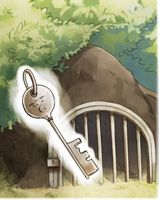

| １０歳までに読みたい世界名作2 トム・ソーヤの冒険 | |
| マーク・トウェイン | |
| (2014) | |
１ ポリーおばさん
「トム！ トムったら！ どこにいるの？」
ポリーおばさんの声が、戸口から庭いっぱいにひびきわたります。
でも、返事はありません。
「ああ、さっきまで、そのあたりにいたと思ったのに......。」
ポリーおばさんは、メガネをかけなおしました。
「まったく、もう、今度つかまえたら、しょうちしないんだから。」
そのとき、うしろで、こそっと物音がしました。
ふりむけば、どろだらけの男の子がつったっています。
「こら、トム、そんなとこでなにしてたの？」
「ううん、なんにも。」
「うそいうんじゃないよ。その口のはじっこに、くっついているのは、なに？ ジャムじゃないの。また、なめてたんだね。今度やったら、ただじゃおかないよって、何百ぺんもいっただろ。」
ポリーおばさんが、おしおきにトムのおしりをたたこうとしたとき、
「おばさん、うしろ、あぶない！」
「えっ？」

おばさんは、あわててとびのきました。
と、そのときには、トムはもう走りだし、あっというまに、高いへいをよじ登り、向こうへ消えていったのです。
おばさんは、あっけにとられていましたが、やがて、くすくすわらいだしました。
「やれやれ、なんて、すばしっこい子だろうねえ。」
トムときたら、町一番のわんぱくで、いたずらもの。それでも、おばさんのなくなった妹の子どもなので、かわいそうに思って、きびしくしかりつけることが、できないでいたのです。トムの弟のシッドのほうは、体が弱く、いつも青い顔をしているけれど、まじめなゆうとう生なので、心配はいりません。
「ところが、トムときたら......。ここはひとつ、心をおににして、ばつとして、なにか仕事をいいつけてやりましょう。」
おばさんは、トムが消えていったへいに、目をやりました。
次の朝に、なりました。
初夏の世界は明るくて、なにもかもが、いきいきとかがやいています。それに今日は土曜日。学校も会社もお休みです。だれもが足どりも軽く、はずむように道を歩いています。
そんななかで、トムだけがうかない顔をして、白いペンキの入ったバケツをさげ、へいをにらみつけていました。
「ちえっ、これを全部ぬれっていうのか。」
なにしろ、ポリーおばさんの家のへいは、高さは三メートル、長さときたら三十メートルもあるのです。
「あ～あ、こんなことしてたら、遊びに行けなくなっちゃうじゃないか。」
トムは、ほおをぷうっと、ふくらませました。
そこへ、友だちのベンがやってきました。
そのとたん、トムの頭に、ぱっと、よい考えがうかんだのです。
トムは、ちょこちょことへいにペンキをぬり、一歩下がって、できばえをながめました。
やってきたベンが、ばかにしたようにいいました。
「やーい、トム。おまえ、またいたずらして、ばつに、ペンキぬりさせられてんだろう。」
「とんでもない。これは、おばさんにたのまれた仕事だよ。」
「仕事だって？」
「ほら、表通りのへいぬりなんていう大事なことは、だれにでもできるわけじゃないだろ。」
「ふうん。」
ベンは、うらやましくなって、
「なんなら、代わってやろうか？」
トムは、ことわりました。
「だめだよ。これは、トム・ソーヤにしかできないって、いわれてしまったからね。」
「なあ、そんなこといわないで、ちょっとやらせてくれよ。」
「でも、おばさんが、なんていうかなあ......。」
「そこをなんとか、な、な、このりんごをやるからさ。」
ベンがおがむように、たのみました。
トムは、ちょっとこまったような顔で、
「えー、そんなにいうんなら、しょうがないなあ。」
と、りんごと取りかえっこして、はけをわたしてやりました。
（しめしめ、うまくいったぞ......）と、トムはにやり。
それからというもの、こんな調子で、次々に友だちがあらわれました。
そのたびに、トムは宝物と交かんして、へいぬりをやらせてやったのです。おかげで、へいを真っ白にぬりおわったころには、みんなから死んだネズミだの、こまのひもだのをせしめて、ものすごい物持ちになっていました。
「ねえ、ポリーおばさん、遊びに行ってもいい？」
トムによばれて、ポリーおばさんが庭に出てきました。
「へいぬりが終わるまで、だめだよ。」
「だから、終わったってば。」
「うそいうんじゃないよ、まだお昼前じゃないの。そんなに早く、できるわけが......。」
ポリーおばさんは、そういいかけて、メガネをかけなおしました。本当に、へいがピカピカになっているのです。
「おやまあ、おまえって子は、その気にさえなれば、ちゃんと、やれるんだねえ。いいとも、遊んでおいで。」
ポリーおばさんがいいおわらないうちに、トムは台所にかけこんで、ドーナツを一つかっさらい、町の広場へとつっぱしっていました。そして、親友のジョー・ハーパーたちと戦争ごっこをして、いつものように大勝利をおさめたのは、いうまでもありません。
その帰り道のことです。
得意になって、家にもどってきたトムは、判事のサッチャーさんの家の前を通りかかりました。
（あっ......。）
庭に、見なれない女の子がいたのです。
青い目の、金ぱつのお下げをした、かわいらしい子でした。
そこでさかだちをしてみせると、女の子はぷいと顔をそむけて、家の中に入っていってしまいました。でも、ドアをしめるとき、持っていたスミレの花を投げてくれたのです。
あの子はだれだろう？ 名前はなんていうのかなあ。スミレの花をつかんで、ぽあんとなりながら、トムは思いました。
もっとも、よいことばかり、そうつづくものではありません。
その夜、トムは、家でポリーおばさんに、こっぴどくぶたれてしまいました。
弟のシッドが、ぬすみ食いをしようとして、おさとうのつぼをわってしまったのですが、ポリーおばさんは部屋に入ってくるなり、われたつぼを見つけて、トムがやったと、かんちがいしました。
「こら、トム、おまえって子は！」
と、バシンと、ほっぺたをたたいたのです。
「おれじゃないよ。シッドが、やったんだぞ。」
「いつもいたずらばっかりしているから、まちがえられるんだよ。」
「えー、そんなのひどいよ。」
さすがのトムも、これには、しょげてしまいました。
そんなトムを、おばさんはちらちら心配そうに見ています。ああはいったものの、ひっぱたいてしまったのを、すごく、こうかいしているにちがいありません。
（もし、おれがこのまま病気で死んじゃったら、おばさんはどう思うだろう。）
（トムや、ゆるしておくれ......。わたしが悪かった。だから、生きかえっておくれ。）
おばさんは、きっとおれにしがみついて、ゆるしをこうだろう。
（そうなったって、ぜったいに生きかえってなんてやるものか......。）
トムはそう思って、ちょっぴり、なけてきました。
なんてかわいそうな、おれ......。
ちょうどそのとき、旅行に行っていた、ポリーおばさんのむすめのメアリ姉さんが帰ってきたのです。
メアリ姉さんときたら、旅の間にあったことをあれこれ楽しそうに話すものだから、ポリーおばさんも、トムのことをわすれてしまったようでした。
「ちえっ、なんだよ、もう。」
せっかくの悲しい気分をぶちこわされた気がして、トムは、すごすごと二階の自分の部屋に上がっていきました。
２ かわいい転校生
トムは、日曜日が大きらい。
なにしろ朝ごはんのあと、教会の日曜学校に、行かなければならないからです。ひどくたいくつだし、聖書の言葉をおぼえて、みんなの前で、あんしょうしなければなりません。そこへ、
「トム、ちゃんとおぼえた？ できたら、すてきなものあげるわ。」
メアリ姉さんが、顔をのぞかせました。
「すてきなものって？」
「だめ、ちゃんと、おぼえてからよ。」
いわれてトムは、聖書の中で、いちばんかんたんな言葉を、一生けん命おぼえました。
「心のまずしきものは幸いなり......アーメン。」
「やればできるじゃないの。」
メアリ姉さんは、にっこりわらって、小さなナイフをくれました。旅のおみやげだったのです。これには、トムは大よろこびです。
「さあ、トム、顔をあらってきなさい。教会に行く時間よ。」
教会の日曜学校では、神様のことを教わります。
そのとき、子どもたちは、聖書の言葉をあんしょうさせられるのですが、二つできたら、ごほうびに校長先生がカードをくれます。
カードが千まいたまると、聖書を一さつもらえるのです。
聖書をもらえば、みなにほめられ、ちやほやされます。
トムは、聖書なんかのために、頭は使いたくないと思っていました。でも、みんなに、ちやほやされるのは悪くありません。そこで、友だちとあめ玉やビー玉とかえっこして、せっせとカードを集めていました。
やがて日曜学校の校長先生の、たいくつで長いお話が終わろうとしていました。あくびをかみころしていたトムは、はっとしました。
ギイとドアが開いて、立派な紳士が、金ぱつのお下げの女の子をつれて、教会に入ってきたからです。
スミレの花をくれた、あの子です。
「この子は、転校生のベッキーです。ベッキーのお父さんは、弁護士のサッチャーさんのお兄さんで、この土地の判事をされることになり、やってこられたのです。」
判事とは、けいさつがつかまえたはん人をさばく、裁判所でいちばんえらい人です。
教会中が、どよめきました。そんなえらい人が、こんないなかのセント・ピーターズバーグに来るなんて、はじめてのことでしたから、子どもたちも、びっくりぎょうてん。
「ところで、みなさんの中で、聖書がもらえるだけ、カードをためた子はいませんか？」
校長先生はいいました。判事さんに、子どもたちがどんなによく勉強しているか、見せてやろうと思ったのです。ところが、だれも答えません。がんばって、なんまいか集めた子はいましたが、千まいも持っている子など、いなかったのです。
校長先生は、がっかりしました。
そのとき、トムが立ちあがりました。
「ここにカードがあります。聖書をもらえますか？」
これには、校長先生はぽかんとしました。
ほかの先生も、いすから転げおちそうでした。
カードを千まい分というと、聖書のことばを二千こも、おぼえなくてはなりません。あのトムが、そんな勉強をするはずもありませんでした。
そうとは知らない、サッチャー判事は、トムをよんで、
「きみは、えらいなあ。名前は、なんていうのかね。」
「お、おれはトム、じゃなくてトマス・ソーヤといいます。」
トムは、ほめられ、すっかりまいあがってしまいました。トムというのはあだ名で、本当の名前はトマスなのです。
「よし、トマスくん。キリストのいちばん、はじめのお弟子さんの二人は、なんていうか教えてくれないか。」
サッチャー判事さんは、にこにこしながらいいました。
トムは、もちろん答えられません。
神様のことを勉強していれば、だれでも知っているような、かんたんなしつもんですが、校長先生も、トムが答えるのは、とても無理だろうなあと、思っていました。
でも、きかれたら、答えるのは礼ぎというものです。
「がんばって、いってごらんなさい。」
校長先生にいわれて、トムは顔を真っ赤にしながらさけびました。
「ダビデとゴリアテ！」
みんな大わらい。まちがいもまちがい、なにしろこの二人は、キリストが生まれるよりも、ずっと昔の人だったからです。
月曜日の朝、トムは学校に向かうとちゅう、森の中で、やぶれかけのだぶだぶの服を着た男の子に会いました。
ハックルベリ・フィンでした。ハックときたら宿なしで、天気がよければ、そのへんで日なたぼっこをし、雨の日には、大きなたるの中でねているような男の子です。
学校なんて行きません。いつも川で魚つりをしたり、泳いだりしているのです。お父さんはいますが、いつもどこかで、よっぱらっていて、子どものハックのことなんて、ほうりっぱなし。
親たちは、ハックと遊ぶことを決してゆるしませんでした。でも、子どもたちは、そんなハックが大すきだったのです。
「よう、トム。今夜、墓場に行ってみないか？ ほら、ホス・ウイリアムズじいさんが死んだろ。きっと、真夜中に悪魔がじいさんの死体をさらいに来ると思うんだ。」
「悪魔が......。」
トムは、ぶるっと体をふるわせました。
「こわいなら、無理に来なくてもいいけど。」
「ハック、行くに決まっているよ。いつもみたいに、ねこの鳴き声で合図してくれよな。」
ハックとやくそくして、トムが学校に着くと、みんなはもう勉強を始めていました。
「トマス・ソーヤくん、またちこくだよ。いったい、どういうわけだね。」
ドビンズ先生にいわれて、トムは、うそをついてごまかそうとしましたが、転校生のベッキーのとなりが空いているのを見て、正直に答えました。
「ハックルベリ・フィンと、おしゃべりしていました。」
子どもたちは、チョークを走らせるのを、ぴたっとやめて、顔を上げました。ハックといっしょだった、なんていったら、しかられるに決まっていたからです。
「なんってことだ。きみは、それがゆるされないって、知っているだろう。よろしい、おしりを出しなさい。」
先生は、トムのおしりをむちでぴしぴしと、たたきました。それからばつとして、女の子たちの席で、勉強するようにいいました。教室は、男の子たちの席と、女の子たちの席が分かれていたのです。
子どもたちはくすくすわらいながら、ひじをつつきあって、トムをひやかしました。でも、その席に着くのが、トムのねらいでした。
トムは、ベッキーのとなりにすわると、持っていたももをつくえにおいて、石板（＊）に「これ、あげる」と書きました。でも、ベッキーは知らん顔をしています。
それならば、と、トムは、今度はかくすようにして石板になにか書きました。
「ねえ。なにを書いているの。」
気になって、ベッキーがききました。
トムは手をどけると、小さな家の絵でした。
えんとつから、けむりがもくもく上っています。
「絵が上手なのね、いいなあ、わたしもうまくなりたい。」
「だったら、教えてあげるよ。」
「いつ？」
「学校が、終わったら。」
そういって、トムは、またなにか書きました。
でも、ベッキーがたのんでも、今度はなかなか見せてくれません。
「だって、だれかにいうだろう？」
「ううん、ぜったいにだれにもいわないわ。やくそくする。」
ベッキーはがまんできずに、トムの手をどかすと、そこには、こんなことが書いてありました。
「きみが、大すき。」
ベッキーは、ぴしゃっと、トムの手をたたいて、顔を真っ赤にしました。
トムがわらったとき、だれかに耳をつかまれ、ぐいっと持ちあげられたのを感じました。いててて......。ふりむくと、先生が、ものすごい顔でにらんでいました。
教室中が、またもや大わらいです。
でも、トムは幸せでした。
お昼になって、学校が終わったとき、トムはベッキーの耳もとでささやきました。
「帰り道に、みんなとわかれてから、ここに、もどっておいでよ。」
「うん。」
二人はべつべつに、ほかの友だちと教室を出て、しばらくすると、またもどってきました。
教室には、二人のほか、だれもいません。
トムは、石板に動物の絵をかいてみせました。
「きみは、ねずみはすき？」
「ううん、大きらい。」
「おれも。生きているやつはね。でも、死んだねずみはちがうよ。ひもで、ぶんぶんふりまわしたりするの、おもしろいぜ。」
「そんなのいや。あたしがすきなのは、チューインガムよ。」
「ガムは、おれもすき。持ってれば、よかったなあ。」
「あたし、あるよ。半分っこしようか。」
ベッキーは、トムにガムをちぎってあげました。
「ねえ、大きくなったら、トムはなんになりたいの？」
「サーカスの道化師だよ。見に行ったことが、あるんだ。すごいおもしろいんだよ。教会より、よっぽどいいと思うな。」
「いいなあ、道化師。」
「だろう？ それに、サーカスに入れば、うんとお金持ちになれるんだって。」
「あたしも、道化師になれるかなあ、あのかっこう、すてきよね。」
「だったら、おれとけっこんして、二人で道化師になろうよ。きみは、こんやくしたことある？」
「ないけど、どうするの？」
「おれのこと、すきっていうんだよ。」
ベッキーはちょっとうつむいて、小さな声で、ささやくようにいいました。
「トムのことが、すき。」
「おれも、ベッキーがすき。」
トムはそういうと、
「さあ、これで、おれたちは、こんやくしたんだよ。これからベッキーは、ほかの男の子となかよくなったら、だめなんだからね。ダンスのときも、おれといっしょに、いなきゃいけないんだよ。」
「そうなの？」
「そうだよ。エミーのときも、そうしたんだから。」
「エミーって？」
ベッキーは目を丸くし、それから、なきだしました。
「ひどいわ。こんやくしたのは、わたしだけじゃないのね。」
「エミーなんて、もうすきじゃないよ。」
ところがベッキーは、そっぽをむいて、口をきいてくれません。トムがいくらあやまっても、だめです。
トムは、ポケットから、古いドアノブをさしだしました。家から取ってきたもので、トムにとっては、一番の宝物でした。
「これをあげるよ。」
「いらない！」
ベッキーは、手から、はらいおとしてしまいました。
これにはトムもおこって、学校をとびだし、いつまでたっても、帰ってきませんでした。
「ああ、トム、ごめんなさい......。」
ベッキーは、なきました。ほんとうは、トムにもどってきて、ほしかったのです。
３ 真夜中の墓場で
その夜、家の時計がボーン、ボーンと十一回鳴りました。
すると、どこからかニャオ、ニャーオと、ねこの鳴き声がしました。
「あ、ハックがむかえに来たんだ。」
トムは、ベッドからとびおきました。
ハックと、墓場に行くやくそくをしていたのです。
弟のシッドがねむっているのをたしかめて、トムは、まどからぬけだし、まき小屋の屋根をつたって、えいっと地面にとびおりました。
「よお」と、ハック。
「やあ」と、トム。
二人はあいさつすると、あとは、口もきかずに町はずれの墓場まで、かけていきました。
ぼうぼうとおいしげる草をかきわけていくと、月の明かりに、くずれた木の墓のかげが見えました。
ひどく、うす気味の悪いところです。
近くのにれの木のえだで、ふくろうがホオと鳴きました。
「ハック、死んだ人って、おれたちのこと、どこかで見ているのかな？」
「わかんねえよ、そんなこと。それより......。」
ハックは、向こうを指さしました。
「あれ、悪魔じゃないか？」
トムは、ぎくりとしました。
暗がりで、光るものがゆれてます。
「トム、こわいよう。もうだめだ。おれ、神様においのりしたことないから、つれていかれちまうかも。」
「そんなに、こわがるなよ。それにあれ、人間だぜ、いったいなにやってんだろう。」
トムは、くさむらの中を近づいていきました。
三人の男たちが、地面をほっているところでした。
「あいつら、墓あらしだ。」
死体といっしょにうめられたものを、ぬすもうとしているのかもしれません。
「ばちあたりなやつらだぜ。あ、おい、待てよ。あれ、よっぱらいのマフ・ポッターおじさんじゃないか。」
ハックは、いいました。
マフ・ポッターおじさんは、ひどい酒飲みで、いつもよっぱらって、町をふらふら歩いているのです。
「医者のロビンソンさんも、いるぞ。もう一人は......。」
トムとハックは、はっと息をのみ、顔を見あわせました。
「インジャン・ジョーだ。」
町一番の悪とうでした。大きなナイフをふりまわし、ものを平気で、ぬすむようなやつです。
そのとき、ふいに、どなりあいが起きました。
インジャン・ジョーとポッターおじさんが、医者のロビンソンさんとけんかを始めたのです。
ロビンソンさんが、ポッターおじさんをなぐりました。
すると、どさっと地面にたおれたポッターおじさんの上をとびこえ、インジャン・ジョーが、ロビンソンさんにつっこんでいきました。
「わあぁぁ！」
月の光の中で、インジャン・ジョーが、ナイフでぐさりとロビンソンさんのおなかをさすのを、トムは見ました。
「ざまあみろ！」
インジャン・ジョーはわらって、ナイフをマフ・ポッターおじさんににぎらせると、たたきおこしました。
「マフ、おまえ、たいへんなことをしでかしたな。」
ポッターおじさんは、ぶるぶるふるえました。
「なんてことだ。なぐられたあとのことを、おぼえていないんだ。」
「おれは見たよ。おまえが人を殺したのを。いいから、さっさとにげろ。つかまったら、たいへんなことになるぞ。」
「おお、ありがとう。」
ポッターおじさんはナイフをその場にすてて、一目散に、にげていきます。
「ジョーのやつ、人殺しを、ポッターおじさんにおしつけたぞ。」
トムがささやいたとき、ふいにインジャン・ジョーがふりむいたので、ハックとトムは、あわてて地面に、はいつくばって、息を止めました。
それから、どれくらいたったでしょう。
二人が起きあがったとき、インジャン・ジョーのすがたは、どこにもありませんでした。
殺されたロビンソンさんが、つめたく横たわっているだけだったのです。
次の日、おそろしいニュースがセント・ピーターズバーグの町中をかけめぐりました、医者のロビンソンさんが殺され、マフ・ポッターおじさんが、はん人として、つかまったというのです。
トムが、人がきからのぞくと、ポッターおじさんをつかまえた保安官に、インジャン・ジョーが話をしています。
「やったのは、マフです。しょうこは、あいつがいつも持っていたナイフですよ。」
インジャン・ジョーは、ポッターおじさんにいいました。
「いくら友だちだからって、人殺しはいけないことだ。だから、だまっていられなかったんだ。」
「ああ、しかたがないさ。よっぱらって、よくおぼえていないが、あっしが悪いんだろう。」
ポッターおじさんは首をふり、ろうやに入っていきます。
「インジャン・ジョーのうそつき。はん人は、おまえのくせに。」
トムが、ぎゅっとくちびるをかんだとき、ハックが、うしろからささやきました。
「......でも、トム、今はだれにもいわないほうがいいぞ。インジャン・ジョーは、かいぶつみたいにおそろしい男だからな。おれたちがつげ口したなんて知れたら、どんな目にあわされるか、わからないよ。」
トムは、ポッターおじさんが、気のどくでなりません。
墓あらしは、もちろんいけないことですが、やってもいない人殺しのつみをきせられるなんて......。
ポッターおじさんは、いつも、よっぱらって歌をうたっているような、陽気なおじさんです。これまで、人にめいわくをかけたこともありません。
なんとかしなくっちゃ。
でも、いったいどうしたらいいんだろう......。
トムは、ぜつぼうしたように空を見上げました。なにもできない自分がなさけなくて、たまりませんでした。
それからというもの、いつもどこかでインジャン・ジョーに見はられているようで、トムは、すっかり元気をなくしてしまいました。
いつもは遊びに出かけて、暗くなるまでもどってこないトムが、ずっと家に、とじこもっているのです。
ポリーおばさんが心配して、弟のシッドにききました。
「トムはどうしたんだろうね。かぜでも、引いたんだろうか。」
「兄さんは、かくしごとをしているんじゃないかな。だって、夜ねごとがひどいんだよ。ごめんなさい、いつかきっと話すから、って、いったりしてさ。」
「きっと、また、とんでもない、いたずらをしたんだろうよ。」
ポリーおばさんのくすくすわらいを、となりの部屋で聞いて、トムは、くわしいことを話さずにすんだと、ほっとしました。
悪いことは、つづきました。
ベッキーが病気で、学校に来られなくなってしまったのです。心配して、トムはおみまいに行ったのですが、ベッキーのお母さんは、会わせてくれませんでした。
「まだ、ちょっとねつがあるの。」
そして、やっとよくなって学校に出てきても、ベッキーは、つんと横を向いて、トムとだけ、口をきいてくれませんでした。
「ちぇっ、なんだよ。まだおこってんのか、しつこいやつ。」
トムはそういいながらも、悲しくてたまりませんでした。
インジャン・ジョーのことがこわいし、ポッターおじさんがかわいそうだし、ベッキーには、すっかりきらわれてしまったようです。
「ああ、こんなことなら、いっそどこかに行ってみんなのきらわれ者になってやる。」
トムは、もうやけくそでした。
そのとき、向こうから、親友のジョー・ハーパーが歩いてきました。
「よお、ジョー。おまえ、今日、学校さぼったろ。」
「ああ、おれ、家出してきたんだ。」
「家出だって？」
「聞いてくれよ。うちのおっ母さんたら、クリームがへっているって、おれのことぶったたいたんだぜ。おれ、ぬすみ食いなんて、これっぽっちもしてないのにさ、あんな家、もう二度と帰ってやるものか。」
「そうか、おまえもか......。」
「いっそ、どこかのどうくつにこもって、仙人にでもなろうと思うんだ。」
「やめとけ。仙人って、おなかがすいたといいながら、死ぬんだろう。おれは、海賊になるつもりなんだ。おまえもいっしょに、大あばれしないか。」
トムがいうと、ジョー・ハーパーは、目をかがやかせました。
「そりゃ、おもしろそうだ。」
トムとジョー・ハーパーは、さっそく相談しました。
町のそばを流れるミシシッピ川は、川下では、川はばが一マイル（約一・六キロ）にもなるのです。
「あのあたりに、小さな島があるだろ。そこを、海賊のかくれ家にしよう。そうと決まれば、ハックをさがしに行かなきゃ。」
こういう冒険なら、たよりになるのは、やっぱりハックルベリ・フィンです。ハックは、酒場の近くの空きだるの中で、いつものように、昼ねをしていました。
トムとジョー・ハーパーが、海賊になる話をすると、ハックもすぐ仲間になりました。
三人は、町はずれで古いほのついた、いかだを見つけました。島にわたるには、もってこいです。
「島でくらすなら、とりあえず、食べ物がひつようだな。」
ハックにいわれて、トムたちは一度、家にもどることにしました。
４ トム、海賊になる
夜、空には星が出ていました。
トムが、ミシシッピ川のほとりで待っていると、暗がりから、二つのかげが近づいてきました。
「そこにいるのは、だれだ。」
「カリブの海賊、トム・ソーヤさまだ。そういう、おまえたちは、何者だ？」
「血まみれのハックルベリ・フィンに、海の殺し屋ジョー・ハーパーさ。」
「合い言葉は？」
「真っ赤な川。」
「よし。」
トムは、川原にとびおりました。
「ベーコン持ってきたぜ。トムは、なにを持ってきた？」
と、ジョー・ハーパー。
「おれは、これ。」
トムは、大きなハムのかたまりを、ドシンと地面におきました。ポリーおばさんの台所から、とってきたのです。宿なしハックは、そんなりっぱな食べ物は持っていません。
「でも、料理するには、これがなくちゃね。」
と、フライパンを見せました。
「あとは、どこかで火を見つけないと。」
マッチやライターみたいなべんりな物は、なかなか、手に入らないころでした。三人は、川べりにとまっていた大いかだに、たいまつがともされているのを見つけて、火種にしようと、一本ぬすみだしました。
それから、自分たちの小さないかだに、とびのったのです。
「さあ、出航だ！」
トムが真ん中に立ち、うで組みをして、わざと、ひくい声で命令しました。
「おれらの海賊島へ。」
「合点、しょうち。」
ハックとジョーが、オールを、わっせわっせとこぎだすと、たちまち流れに乗りました。
遠くに、町の明かりがちらちら見えます。
ポリーおばさんもメアリ姉さんも、弟のシッドのやつも、今ごろ、ぐっすりねむっているはずです。
トムのむねは、きゅっと、いたみました。ハックも、ジョー・ハーパーも、町のほうへ顔を向けています。
あしたになって、おれたちがいないのに気がついたら、きっと、みんな大さわぎするだろう......。そう思うと、なぜか、なきたいような気持ちになって、トムはわざと、にっとわらってみせました。
いかだは、急流に乗って、どんどん進みます。
「おっ、いけない。このままだと、島を通りこしちゃうぞ。」
ハックがさけんだので、三人は交たいでオールをこぎ、けんめいに流れから、ぬけだそうとしました。
なんとか浅瀬に乗りあげることができ、三人はいかだを引きあげて島に上陸しました。岸辺のしげみの向こうに、小さな森がありました。
いかだにあったほをはずし、木にはって、テントのできあがり。それから、かれえだをひろってきて、たき火です。
すぐに、パチパチと、えだがもえはじめました。
ハックがベーコンをやき、パンをあぶりました。
「うめえなあ。」
ハックが、口いっぱいに、ほおばりながらいうと、ジョー・ハーパーも、うなずきました。
「ほんとだよ。ここには、口うるさい母さんもいないしな。」
「みんな、うらやましがるぞ。」
と、トム。
三人は、おななかがいっぱいになると、たき火のまわりの草の上に、ごろりと横になりました。
「楽しいなあ。あした、もう学校に行かなくて、いいんだぜ。」
と、ジョー。
「だれも歯をみがけとか、顔をあらえなんて、いわないし。」
と、トム。
「それにここなら、おれのぼろぼろの服を見て、からかうやつも、いないしな。」
宿なしのハックが、トウモロコシのじくでパイプを作りながら、いいました。
「服っていやあ、おれ、これ一まいしか、ないんだけどな。海賊にしちゃ、みすぼらしいかい？」
「そんなの気にするな。おれたちは、今に大海賊になるんだから。宝を見つけて、大金持ちだ。服なんて、いくらでも買えるぜ。」
トムがなぐさめると、ハックは、にっとわらって、あくびをし、それからすぐに、ねいきをたてはじめました。
でも、ジョーとトムは、なかなかねむれません。ねる前のおいのりを、していなかったからです。しなくても、ここには、うるさくしかりつける人はいません。
でも、神様のばちがあたるような気がして、トムは、こっそり、心の中でおいのりをしました。
朝です。トムは、目をこすりました。
「ここは、どこだ？」
きのうのばんのたき火から、うすくけむりが立ちのぼっています。
（そうだ、島にいるんだ......。）
と、トムは思いだしました。
木立の中を朝日がさしこみ、小鳥がさえずっています。
リスがちょんちょんと近づいてきて、こちらを見ています。
「おい、起きろ、海賊の朝だぞ。」
トムは、となりでねているジョー・ハーパーとハックを、たたきおこしました。
三人はまずは水浴びだと、岸辺まできょうそうです。
バッシャン！
バッシャン！
バッシャン！
水にとびこみ、一度もぐって顔を上げたトムは、あっ！ とさけびました。
「おい、いかだがないぞ。」
あたりをさがしてみたけれど、どこにもありません。
「へんだなあ、ぬすまれたのかも。」
「ちゃんとつないでなかったから、流されたのさ。でも、へっちゃらだよ。いざとなったら、泳げばいいのさ。」
ハックが、わらいました。
向こう岸までは、およそ二百メートルぐらい。三人とも泳ぎは得意でしたから、ぜんぜんへっちゃらです。
それからさんざん遊んで、やっと、おそい朝ごはんにしました。つってきた川魚を、ベーコンといっしょに、フライパンでやきます。パリッとやけた魚のこうばしいこと。
「すげえ、魚がこんなにおいしいなんて。」
と、ジョー・ハーパーがいうと、ハックは、
「すきなだけ食え。足りなきゃ、おれがつってきてやるから。」
「うん。」
でも、ジョーはうなずきながら、母さんの手料理を思いだし、心のどこかで、家がこいしくなってもいたのです。
それは、トムも同じでした。家のないハックとちがって、二人には、ちゃんと帰るところがあったからです。
そのとき、遠くでドーンというばく音がしました。
「なんだ、あれ？」
ジョーが、ぎょっとなって、こしをうかしました。
「かみなりじゃないか？」
と、ハック。
すると、またドンッと大ほうのような音がしました。
「行ってみよう。」
トムたちはかけだし、草むらから、向こう岸の町のほうを見ました。
大きな船がうかび、そのまわりに小さなボートが、たくさんこぎまわっています。
「だれか、おぼれたのかも。それでさがしているんだよ。」
と、トムがいいました。
「ああ、そういえば、去年もそうだったな。」
ハックが、うなずきました。
「ああやって、水の上で大ほうをうつと、死人が、川底からうかびあがってくるんだってさ。」
「へえ、おもしろそう。おれも、あそこにいたかったなあ。」
ジョー・ハーパーがいうと、ハックがトムにききました。
「でも、いったい、だれをさがしてんだろう？」
トムは少し首をかしげ、ぱっと顔をかがやかせました。
「わかった。おれたちだよ。」
「えっ、おれたち死んでないぜ。」
「きっと、おれたちのあのいかだを見つけて、てっきり、川にしずんだと思っているんだよ。」
それで、大さわぎしているのでしょう。
「ぜったいそうだよ。だって、いかだで待ちあわせする前、クラスのやつらに会うたびに、今にびっくりするようなこと、起こるかもって、話してきたからさ。」
トムがいうと、ジョー・ハーパーも、にやりとわらいました。
「おれも同じ。それで、川に出たと知って、みんな心配して、悲しんでいるんだ。すげえ。おれたち、これでえいゆうだぜ。」
三人は、ゆかいでたまりません。たがいに、手をたたきあいながら、海賊になったかいがあったと、思いました。
川にちらばったボートは、夕ぐれまであたりを行ったり来たりして、やがて岸に帰っていきました。さがすのをあきらめたようです。
三人は、また魚をつってばんごはんにし、今ごろ、町中でどんなさわぎになっているか、話しあいました。
「母さん、心配してるかなあ。」
と、ジョー・パーパーがいいました。
トムが、顔を上げました。
「なんだ、おまえ、もう海賊がいやになったのか？」
「そうじゃないけどさ......。」
しょんぼりしているジョー・ハーパーを見て、だらしねえなあとわらったトムですが、やはり同じように、ポリーおばさんのことを考えていたのです。
トムは、二人がねたあと、こっそり起きて、町にもどってみることにしました。川を泳いでわたり、岸に人がいないのをたしかめて、ポリーおばさんの家まで、やってきました。
うまいことに、開いていたまどからしのびこみ、ソファーの下に、もぐりこんだとき、部屋に人が入ってきました。
「今ごろ、兄さんは天国にいるんだね。きっと、生きているとき、もっとおぎょうぎよくしとけばよかったって、こうかいしてんじゃないかなあ。」
シッドの声が聞こえました。
このままさがして、それでも見つからなかったら、日曜日には、教会でお葬式があるそうです。みんなは、もうすっかりあきらめているのです。
「トムのことを、悪くいうのはおよし！」
ポリーおばさんが、シッドをしかりつけました。
「さんざん心配させられたけど、トムはあれでやさしい子なんだよ。こうなることがわかったら、もっとかわいがってやればよかったよ。」
ポリーおばさんはそういいながら、おいおい大なきしたので、ソファーの下のトムもぽろぽろなみだをこぼしました。
思わず出ていきかけたけれど、仲間たちをうらぎるわけには、いきません。ここは、がまんです。じっとかくれて、みながねしずまるのを待って、ねているおばさんに、ごめんねといいながら、キスをすると、また川へ走っていきました。
よく朝のこと、海賊の島で、ジョー・ハーパーとハックが、話しあっていました。
「トムのやつ、一人で行っちまったんだぜ。」
「いや、ぜったい帰ってくるって。」
そのとき、ひょっこり、トムがもどってきたのです。
「ずるいよ、ぬけがけなんて。おれも帰ろうかな。」
と、ジョーがなじりました。
「そろそろ、引きあげどきかもな。」
と、ハックもいいました。トムはしたうちして、
「ちぇっ。二人とも、すきにすればいいだろ。おれは、まだのこるよ。今、もどったら、おもしろくないし。」
「え、どういうこと。」
「よく聞けよ。おれに、計画があるんだ。」
トムは、ハックとジョーをよびよせて、計画を話しました。
「なるほど、そいつは、おもしろいや。みんな、びっくりするぜ。」
ハックが、とびあがりました。ジョーも、もう帰りたいなんて、いいませんでした。
三人はすっかり元気になって、島の中を遊びまわりました。
５ 三人のお葬式
ところが、その夜のこと、トムは、ふいに目をさましました。
森が、ざわざわ、やけにうるさかったからです。それは、強い風のせいでした。木のえだが、ちぎれそうなぐらいにゆれています。
とつぜん、あたりに、かみなりの青い光がきらめき、すぐ近くで、ばくだんを落としたような地ひびきが聞こえました。
ぱらぱらと、大つぶの雨が落ちてきました。
「みんな、テントまで走れ。」
トムが、さけびました。
その間にも、かみなりが落ちて、ドーン、ドーンと立てつづけに、ひびきます。
ものすごい雨の中、三人は、ぬかるみに足をとられながらも、なんとか、森のテントまでたどりつきました。
ところが、そのテントも、あっというまに風で、とばされてしまったのです。
このままではいけないと、三人は小高いおかに立つ、かしの木の下にかけこみました。その根っこのところで、三人はたがいに、しがみつき、うずくまるようにして、身をふせました。すぐ真下に流れる川はたたきつける雨で、海のように波だってうずまいています。
それは、もしかしたら、ほんのわずかな時間だったのかもしれません。あらしは、やってくるのも速かったのですが、さっていくのも、速かったのです。
ずぶぬれになりながら、三人はもとの広場にもどって、ぎょっとなりました。たき火のそばの大きな木に、かみなりが落ち、ぎざぎざにさけて、おれていたのです。あのまま、広場にいたら、三人は死んでいたかもしれません。幸い、つんだ丸太のおくのほうで、小さな火種がのこっていました。
「できるだけ、かわいている葉っぱをさがしてこよう。うまくやれば、たき火ができるよ。」
トムがいって、みんなで交たいで火種をふうふうとふくと、やっとのことで、火がもえはじめました。
「うおぉ、あったかい。」
三人は、生きかえるような気持ちになりました。
それから、地面に落ちていたハムを切って、火であぶって食べ、ぬれていた服をかわかしているうちに、安心とつかれから、急にねむけがおそってきました。
やがて、夜が明け、チュンチュンと、鳥が鳴きはじめたころには、三人は、もうぐっすりねむりこんでいました。
その日の午後、町は、悲しみにしずみこんでいました。
いなくなってしまった子どもたちを、ついに、見つけることができなかったからです。のこっていたわずかなきぼうも、あのあらしのおかげで、うばわれてしまいました。
だれもが、水かさをまして、ゴーゴーっと流れる、にごった川をながめ、ため息をつき、ひそひそと小さな声で、トムたちのことをうわさしました。
子どもたちも、土曜日で学校が休みなのに、いつものように遊びには行きませんでした。
ベッキーは一人、校庭を歩きながら、
「ああ、あのとき、ドアノブをもらっておけば、よかった。そうすれば、トムのことを思いだすことが、できたのに。」
と、ぽろぽろとなみだを流しました。
そして、日曜日になりました。
日曜学校のあと、教会のかねが鳴りました。でも、それはいつもの礼はいを知らせる音では、ありませんでした。お葬式のときに鳴る、もっと悲しい音だったのです。
町の人々が、うつむいて、教会へ向かって歩いていきます。その数ときたら......。こんなに大ぜいの人々が、教会にやってくるのは、はじめてのことでした。
大人も子どもも、しゃべるものは、だれもいません。
やがて、黒い、も服を着たポリーおばさんが、メアリとシッドにつきそわれて、教会に入ってきました。
ジョー・ハーパーの家族も同じようにやってくると、町の人は、みな立って出むかえました。
牧師さんが、両手を広げて、おいのりをはじめました。
「さあ、天国へ行った子どもたちのことを思いうかべてください。」
牧師さんの言葉に、ポリーおばさんはうなずきながら、目にハンカチを当てました。
すすりなきが、あちらこちらで聞こえました。
そのときです。ドアが、ギーッと開きました。
顔を上げた牧師さんが、あぜんとした顔で、ドアを見ています。
みんなも気がついて、いっせいに、うしろをふりかえりました。
すると......。
トムを先頭に、ジョー・ハーパー。そして、ぼろ服を着たハックルベリ・フィンが、少してれくさそうに身をちぢめるようにして、ついていきます。
みんなは総立ちになって、ぽかんと口を開けています。
これこそ、トムが立てた計画でした。自分たちのお葬式に出て、みんなを、おどろかせてやろうと思ったのです。
それは、大成功でした。みんなは、ゆうれいでも出てきたのかと、びっくりしています。
そのなかで、一番にとびだしてきたのはポリーおばさんでした。おばさんは、だまったままトムをぎゅうとだきしめてくれました。ジョー・ハーパーのお母さんも、ジョーのことをだきしめました。
みんなが、ないていました。もちろん、うれしなきです。
でも、家族のいないハックのことをだきしめてくれる人は、いませんでした。
ハックが、こそこそにげだそうとしたので、トムは手をつかんで、ポリーおばさんにいいました。
「ハックも、無事だったんだから、よろこんであげてよ。」
「ああ、もちろんだよ。ハックがもどってきて、おばさんは、どんなにうれしいか。」
ポリーおばさんに頭をなでられて、ハックは、くすぐったそうな顔をしていました。
「さあ、みなさん。子どもたちが無事に帰ってこられたのも、神様のおかげです。みなでうたいましょう。」
牧師さんの言葉に、だれもが高らかに賛美歌をうたいました。町によろこびの声が、ひびきました。
みなが自分のほうを見ているので、トムは、うれしくてたまりませんでした。もちろん、そのあとで、ポリーおばさんに、さんざんしかられたのですけれど。
６ ベッキー大ピンチ
トムとジョー・ハーパーは、月曜日に学校でも大人気でした。
だれもが、トムとジョーのまわりに集まってきて、話を聞きたがりました。トムは得意になって、島の冒険だけでなく、やってもいない海賊の話まで、してやりました。
ベッキーも、目をきらきらさせながら、トムのほうを見ています。なか直りしたがっているのが、わかります。
ところが、みんなにちやほやされているトムは、ちょっぴりいじわるしてやろうと、前に、なかよくしていた女の子エミーのほうに行ってしまいました。
ベッキーは、くやしそうにくちびるをかむと、
「それなら、いいもん。」
と、まわりの友だちにいいました。
「ねえ、今度、うちでピクニックするの、来ない？」
ベッキーは、みんなに声をかけてまわりました。クラスで、よばれなかったのは、トムとエミーだけでした。
「なんだよ、ベッキーのやつ。」
トムが、休み時間にうら庭に行くと、ベッキーは、アルフレッドと楽しそうに絵本を見ていました。
トムは、どきんとして、頭の中で、ベッキーのとなりにいたアルフレッドをぶんなぐる空想をしてから、とぼとぼと、向こうへ行ってしまいました。
それを見て、がっかりしたのはベッキーでした。トムがだまって行ってしまったのを見て、アルフレッドがうっとうしくなってきました。
急に、ベッキーにつめたくされたアルフレッドも、おもしろくありません。
（ベッキーがすきなのは、トムなんだな。）
と気がついて、アルフレッドは、トムの教科書に、わざとインクのしみをつけてやりました。

先生は、すごくおこるにちがいありません。
これをベッキーは見つけて、はっとしました。
どうしよう、トムにいってあげなきゃ......。
ところが、トムは近くにいません。
やきもきしているうちに、先生のつくえの引き出しが開いているのに、気がつきました。中には、美しい大きな本が入っています。
それは、先生が大切にしている医学の本でした。
ベッキーは前から見てみたいと思っていたので、こっそり、引き出しから本を出して、ページをめくっていました。
そのとき、うしろで音がして、ふりむくと、トムがいたのです。ベッキーはあわてて、本をもどそうとして、ベリッと、絵のページをやぶいてしまいました。
「ひどいわ、トム・ソーヤ。人がやっていることを、のぞき見するなんて。」
「べつに、のぞいてなんかいないよ。」
「先生に、本をやぶいたこと、いいつけるつもりなんでしょう。わたし、たたかれるんだわ。たたかれたことなんて、今まで一ぺんもないのに。」
ベッキーは、わっとなきながら、そのまま、教室からとびだして、いってしまいました。
「女の子って、かわってらあ。たたかれるぐらい、へっでもないのにさ。だれが、いいつけるもんか。でも、一度ぐらい、たたかれちゃえばいいんだ。」
トムは、そういじわるく思いました。
やがて、じゅ業が始まりました。先生は、すぐにトムの教科書がよごれているのに気がつき、しかりつけました。
アルフレッドが、にやにやわらっています。
ベッキーは、本当のことを先生にいおうとしましたが、トムは、絵をやぶったことをつげ口するかもしれません。それで、はらはらしながら、トムがぶたれるのを見ていました。
先生は、自分のつくえの引き出しを開け、あの本を取りだし、「あっ」と声を上げました。
やぶれたページを、見つけてしまったのです。

「だれですか、こんなことをしたのは。」
先生はこわい顔で、みんなを見まわしました。今度ふるえるのは、ベッキーの番です。さっきまで、さわがしかった教室が、しんとしずまりかえっています。
「ベンジャミン、きみか。」
「いいえ。」
「エミー・ローレンスかね。」
「いいえ。」
先生は、じゅんじゅんに、子どもたちにきいていきます。
ついにベッキーの名前がよばれました。
トムは、むねがはりさけそうでした。先生がつづけます。
「ベッキー・サッチャー。こちらを見なさい。きみかね。」
ベッキーは、なきそうな顔をしました。
トムは、さけびました。
「先生、おれがやりました！」
ベッキーは、あっけにとられて、先生の前に出ていくトムを見ました。
トムは、ぶたれました。これまでにないほど、ひどく。
ベッキーは、先生が手を上げるたびに、自分がぶたれている気持ちで、目をつぶりました。先生はさらに、トムに、放課後も二時間のこって、勉強するよう、命じました。
でも、それも、トムにはへっちゃらでした。教室の外で、自分を待っていてくれる女の子がいると、知っていたからです。
トムは、その夜、ベッドの中で、どうやって、アルフレッドに仕返しをしてやろうかと考えました。ベッキーがなきながら、なにもかも打ちあけてくれたからです。
それから、ベッキーが、おしまいにいった言葉を思いだし、うれしくなりました。
「トム、あなたって、サイコーよ！」
７ ゆうれい屋しき
夏休みになりました。
でも、べッキーが、家族といっしょに旅行に出かけてしまったので、トムはおもしろくありません。おまけに、はやっていたはしかにかかり、とうとう、一か月もねたきりになってしまいました。
ようやく外に出てみると、町は、墓場でトムたちが目げきした、あの殺人事件の裁判の話で、もちきりでした。
医者のロビンソンさんを殺したのは、マフ・ポッターおじさんだとされています。ところが、本当のはん人は、町一番の悪とうのインジャン・ジョーでした。そのことを知っているのは、あのとき墓場にいた、トムとハックしかいません。トムが、
「ポッターおじさんが、かわいそうだなあ。」
というと、ハックはうなずきながらいいました。
「よっぱらいのなまけ者だけど、いい人だからな。おれに、魚つりを教えてくれたのも、ポッターおじさんなんだ。」
「おれにも、たこの作り方を教えてくれたよ。」
「けど、トム、はん人はインジャン・ジョーだっていったら、おれたち、あいつにぶっ殺されるぞ。」
二人はなさけない気持ちで、ろうやのポッターおじさんに、マッチとたばこをさしいれしてあげました。ポッターおじさんは、おいおい、なみだを流してよろこびました。
「ああ、トムに、ハック、こんなばかなあっしに、親切にしてくれて、ありがとうよ。」
トムは、ますますつらくなって、家にもどりました。
ポリーおばさんやメアリ姉さんは、ポッターおじさんは、いよいよ、だめだろうと教えてくれました。
人殺しのはん人は、しばり首になるそうです。
そう聞いて、トムはじっと考え、それから一人で、夜の町へ出かけていきました。
よく日、裁判が、始まりました。
ポッターおじさんが、くさりにつながれて、裁判所に入ってくると、町の人たちは、いっせいに、顔を向けました。その中にはインジャン・ジョーもいます。
保安官は、いろんなしょうこを見せました。
決め手は、死体のそばに落ちていたナイフで、それはいつも、ポッターおじさんが持ちあるいているものでした。
「マフ・ポッターは、よっぱらって、ロビンソンさんとけんかになり、ひどいことをしてしまったにちがいありません。」
マフ・ポッターは、真っ青な顔になりました。
裁判所は、しんと、しずまりかえっています。
そのとき、マフの弁護士が立ちあがりました。
「裁判長！ トマス・ソーヤをよんでくれませんか。」
みんなびっくりして、トムのほうを見ました。
「きみは、あの事件の夜、どこにいましたか？」
トムは、インジャン・ジョーがこちらをにらんでいるのに気がついて、いっしゅん口がきけなくなりそうでした。でも、声をふりしぼっていいました。
「友だちと墓場にいました。」
「そこで、なにを見ましたか？」
「医者のロビンソンさんが、板切れをふりまわして、ポッターおじさんがたおされるのを見ました。そしたら、インジャン・ジョーが、おじさんのナイフをつかんで、とびかかっていったのです。」
そのとたん、インジャン・ジョーがウオオーとさけんで、裁判所のまどに体当たりして、外にとびだしていきました。
おかげで、ポッターおじさんは、しばり首にならずにすんだのです。
トムの勇気を、町中の人たちがほめたたえました。新聞にも書きたてられて、子どもたちからも、うらやましがられましたが、トムもハックもびくびくしていました。ポッターおじさんをすくえたことはよかったけれど、インジャン・ジョーの仕返しがこわかったのです。

インジャン・ジョーには賞金がかけられ、みながさがしていましたが、見つかりません。きっとどこか遠くへ、にげていってしまったのでしょう。
町の人が、そういっているのを聞いて、トムとハックは、ようやくほっとして、いつものように遊びはじめました。
しばらくして、トムは、大昔のどろぼうがうばった宝物を、この町のどこかに、かくしたらしいと、耳にしました。
さっそくつるはし（＊）をかついで、トムが町はずれを歩いていると、ハックによびとめられました。
「なにするんつもりなんだい、そんなのかついで。」
「宝さがしだよ。昔、どろぼうがかくしたんだってね。」
「おもしろそうだ、おれも、つれていってくれ。」
ハックがそういったとき、二人のそばを、最近、町にやってきたスペイン人がよろよろと歩いていきました。緑色のメガネをかけた、みすぼらしいなり（＊）をしたじいさまで、気のどくに、口がきけないらしく、どこに住んでいるのか、だれも知りません。
「だけど、トム、どろぼうの宝って、どこにあるんだい？」
「もし、海賊だったら、島とか、大きな木の下とかだな。そして、あとでほりおこせるよう、地図をかいておく。」
「おまえ、その地図とやらを、持っているのか。」
「ないけど、あのおかのてっぺんの、にれの木があやしいと思うんだ。」
トムとハックは、おかに上り、木のまわりをほりはじめました。
「宝物を見つけたら、二人で山わけだぞ。ハック、大金持ちになったらどうする？」
「サーカスを見に行ったり、ソーダを飲んだりして、みんな使っちまう。じゃなきゃ、おやじに、とられちまうからな。トムは？」
「おれはたいこと、本物の剣と、赤いネクタイと、ブルドックの子犬をかうつもり、それから、けっこんするんだよ。」
二人はそんなことをいいながら、せっせとほりつづけましたが、見つかるのは石ころばかり。
「ここじゃないのかなあ。」
ハックがいうと、トムはしばらく考えて、
「宝をかくすときは、死人に番をさせるって、聞いたことがあるぞ。とすると......、あそこだ。ゆうれい屋しき。」
トムは、おかの下の、くずれかけた家を指さしました。
「ゆ、ゆうれいか？ おれ、こわいのいやだよ。トム。」
「ばかいえ。ゆうれいが昼間に出てくるもんか。」
トムとハックは、まっしぐらに、おかをかけおりました。
ゆうれい屋しきの屋根は、半分くずれ、庭には、草がぼうぼうにのびていました。
二人は、ゆうれいに気がつかれないよう、そっと足音をしのばせて、中をさがしまわり、二階に上がってみました。
「なんだ、ただほこりっぽいだけで、なにもないじゃないか。」
ハックがいったとき、トムがハックの口をおさえました。
「しっ。」
人の声が、したからです。
ゆかのあなから、下をのぞくと、あのスペイン人のじいさまが、手下らしき男といっしょに、屋しきに入ってきたところでした。
「アニキ、そろそろ、この町からずらかったほうが、いいんじゃないんですかい？」
「いや、もう一けん、どろぼうに入ってからだ。」
口がきけないはずの、スペイン人がそういったとき、トムは、どきっとしました。
あの、インジャン・ジョーの声だったからです。
「それまで、あっちこっちでぬすんできた金を、ここにかくしておくつもりなのさ。おっ、ちょうどいい、つるはしがある。」
インジャン・ジョーは、トムがおいてきたつるはしを見つけて、ゆか下をほりはじめました。すると、ガチャと音がして、
「おっ、なんだ。宝箱だぞ。アニキ、すげえ金貨の山だぜ。」
「そいつは、大どろぼうがのこした宝じゃないかな。おれたちの金といっしょに、かくしておこう......。いや待てよ。」
インジャン・ジョーは、手下の男にいいました。
「このつるはしは、まだ新しいぞ。もしかして、だれか、上にいるんじゃないか？」
トムとハックは、息が止まりそうなぐらいにおどろきました。
インジャン・ジョーが、ゆかからはいあがり、ミシミシと足音を立てて、階段を上ってきます。
まどからとびおりてにげようにも、手下がいるのです。
もうだめだ！
トムが思わず、目をつぶったときでした。
くさった階段がぬけおち、インジャン・ジョーは悲鳴を上げて、落ちていきました。
「いててて、ちくしょう。」
インジャン・ジョーは、したうちをしました。
「まあ、こんなに階段がぼろいんじゃ、上にだれか行こうとしても、先にくずれたはずだな。それより、ぶっそうだから、かくし場所をかえるぞ。」
「どこにするんですかい？」
「おれのかくれ家だ。一号にするか、いや、二号にしよう。十字架の下だ。」
インジャン・ジョーは、手下といっしょに宝箱をかついで、外に出ていきました。
トムとハックは、悪とうたちがいなくなっても、しばらくじっとしていました。あとをつけていく勇気は、さすがになかったのです。
「くそお、あのインジャン・ジョーってやつ、本当に悪いやつだな。まだ、どこかをおそうつもりみたいだぞ。」
ハックがいうと、トムもうなずきました。
「あんなやつ、くたばっちまえばいいんだ。よし、あいつが宝物をどこにかくしたか、見つけようぜ。」
「二号って、いってたぞ。」
「なんだろうな、二号って。家の番号かな。」
「ばかいえ、トム、おれたちの町に番号のついた家なんてないぞ。」
「だったら......部屋の番号かな？ ほら、宿屋にあるだろ。一号室とか、二号室とか。」
「それだよ、トム。」
ハックが、手をたたきました。
この町には宿屋は、二けんしかありません。
二人はもどって、調べてみることにしました。
一けん目のきれいな宿屋の二号室には、わかい弁護士が、しばらく前から、とまっているそうでした。
二けん目のうすよごれた感じの宿のほうは、よそ者がかりているようです。でも、スペイン人のじいさまでは、なさそうです。
ただ、よそ者って、もしかしたら、さっきのインジャン・ジョーの、手下かもしれません。
「しばらく、ここを見はってみるよ。どうせ、おれ宿なしだしさ。」
と、ハックがいいました。
「ベン・ロジャースのとこが近いから、あいつの家の物置をかりることにするよ。いつも、水くみの手つだいしてるから、ときどき、夜とめてもらってんだ。」
「じゃあ、夏休みだし、昼間はおれが代わってやるよ。それから夜、なにかあったらすぐにとんできて、ねこの鳴きまねをして知らせるんだぞ。」
「わかったよ、トム。」
ところが、あのあやしいスペイン人のじいさまのすがたは、その日から、町で見かけなくなりました。
８ ほらあなの二人
しばらくして、ベッキーが、旅行から帰ってきました。
「夏休み前に学校のみんなとやくそくした、ピクニックをするの。トムも来てね。」
船で川を下ったところに岩山があるので、そこへ、みんなで出かけようというのです。つきそいは、わかいお兄さん、お姉さんたちです。岩山に着くと、子どもたちは大さわぎしながら遊びまわり、おべんとうを食べました。
「あそこに、ほらあながあるだろ。あそこを、全部探検したやつは、いないんだって。」
みんなは、ろうそくを持って、ほらあなに行ってみることにしました。
ほらあなは、おかの真ん中にあって、あなはせまく、ひんやりしていています。おまけに、いくつもの横あなが、それこそ、木のえだのように広がっているのでした。
「ヤッホー」と、だれかがどなると、その声が岩かべにこだまして、返ってきます。
このほらあなは、トムもはじめてでした。
「あっちは、どうなっているんだろ。ベッキー、行ってみようよ。」
二人は手をつないで、仲間たちからはなれて、おくへ進んでいきました。
やがて、子どもたちが、それぞれ入り口にもどってきたときは、もう夕方で、すっかり暗くなっていました。
つきそいのお兄さんたちは、子どもたちを集めると、あわただしく、また、船に乗せて町へもどっていきました。
その夜のことです。
れいの宿屋の前で、一人、見はりをつづけていたハックが、はっとしました。うらから、二人の男が出てくるのが、見えたのです。
暗がりから、インジャン・ジョーの声がしました。
「今夜こそ、かたづけて、この町からにげてやるぞ。」
「金はいっぱいあるんだから、もういいんじゃないか。」
「ばかいえ、おれは、あいつのだんなに、何度もろうやに入れられて、ひどい目にあわされたんだ。ふくしゅうしてやる。」
ハックは、とちゅうまでつけていって、二人の悪とうが向かったのが、おかの上のダグラスさんのお屋しきだと気がついて、おどろきました。
ダグラスさんといえば、町一番のお金持ちです。もと判事だったご主人がなくなって、今はおばさんが一人でくらしていました。
ハックは、転がるようにおかを下りてくると、とちゅうのジョーンズじいさんの家のドアを、どんどんとたたききました。
「こんな夜中に、何事だね。」
ジョーンズじいさんは、宿なしハックを見て、まゆをしかめましたが、わけを聞いて、
「それは、たいへんだ。」
「ダグラスおばさんには、いつも親切にしてもらってるから、なんとか助けてあげてほしいんだ。でも、おれが知らせたなんて、いわないでよ。」
ジョーンズじいさんは、息子をたたきおこして、保安官をよびにいかせ、自分はライフルじゅうをつかんで、急いで出ていきました。
ダーン！
すぐにじゅう声がしたので、ハックはびっくりして、にげてしまいました。
でも、やっぱりそのあとのことが気になって、朝、ジョーンズじいさんのところに行くと、どろぼうには、にげられてしまったけれど、ダグラスおばさんは無事だったと教えてもらったのです。
「インジャン・ジョーのやつ、箱をほうりだしていったぞ。」
「えっ、中になにが入っていたの？」
ハックがどきっとして、顔をあげました。
「どろぼうの道具がつまったやつさ。いったい、なんだと思ったんだね？」
「え......。」
ハックは、口ごもりました。てっきり、れいの宝物のつまった箱だと思ったのです。
「もしかしたら、日曜学校の本かと。」
ジョーンズじいさんは、わらいだしました。
「まだなにか、かくしていそうだが、まあいい、それより聞いたかい？ ベッキーとトムが、いなくなったんだって。」
二人がほらあなに入ったきり、もどっていないことが、朝になってからわかって、町中、大さわぎになっているそうです。
「ともかく、それで、インジャン・ジョーたちをさがしているひまは、ないんだよ。」
あのほらあなのおくが、どうなっているのか、だれも知らないのです。
「どうしよう、トム......。」
ベッキーが、しくしくないています。
二人は、ぬれた石のかべがろうそくの光にかがやいて、きれいだったので、いくつもあなをめぐっているうちに、帰り道が、わからなくなってしまったのです。
「ごめん、おれのせいだ。」
「ううん、引きかえそうっていわなかった、わたしも悪いの。」
二人は持っていたケーキを分けあって食べ、つかれると、とちゅうでねむって、また歩きつづけました。
いったい、どれくらい時間がたったのでしょう。
とうとう、最後のろうそくももえつきて、ふっと火が消えたとたんに、あたりは真っ暗になりました。
「このまま、わたしたち死んじゃうんだわ。」
「あきらめちゃだめだよ、ベッキー。おれがぜったいに、つれてかえるから。」
そのときふいに、おくのほうで声がして、光が見えました。
「あ、だれか、助けに来てくれたんだ。」
トムはよろこんで、さけびました。
「おーい、おーい。」
ところが、ほらあなの向こうに光とともにあらわれたのは、助けなどではありませんでした。
インジャン・ジョーだったのです。
けれども、インジャン・ジョーはふりむきもせずに、にげるように、おくへ消えてしまいました。
きっと、トムの声がこだまして、自分をつかまえにきた保安官たちの声だと、かんちがいしたのかもしれません。
トムは、ほっとして、またベッキーのもとに引きかえしました。
「だれもいなかったよ。」
トムは心配させたくなくて、うそをつきました。
「ああ、あたし、もう歩けない。」
でも、このままじっとしていたら、インジャン・ジョーに、つかまってしまうかもしれません。
トムは、ポケットからたこ糸を出し、ベッキーににぎらせました。
「きみはここで待っていて。かならず、もどってくるから。」
「きっとよ。」
トムは一人で、あなの中に入っていきました。真っ暗な中を手さぐりで、一歩、一歩、少しずつ......。
セント・ピーターズバーグの町は、悲しみにしずんでいました。
二人がいなくなって、もう三日もたっていたのです。
ベッキーのお母さんは、ねつを出して、ねこんでしまいました。ポリーおばさんのかみの毛は、心配のあまり、真っ白になってしまいました。
だれもが、あきらめかけたときです。真夜中に、とつぜん、町のかねが鳴りひびきました。
「トムとベッキーが、見つかったぞおお。」
大ぜいの人たちをひきいて、ほらあなをさがしつづけていたベッキーのお父さんにも、すぐに知らせがいきました。
ポリーおばさんが、大よろこびで、トムをだきよせました。
「いったい、どうやって出口を見つけたの？」
トムは、ベッキーにたこ糸をにぎらせ、一人で糸がいっぱいになるまで進んだとき、とうとう向こうにきらりと光る、かすかな明かりを見つけたのです。
それは、ミシシッピ川をはじく夕焼けでした。
トムはベッキーをつれにもどり、二人があなから顔を出したとき、ちょうど、ボートが通りかかったのです。
ボートに乗っていた人たちは、びっくりぎょうてんしました。
二人が立っていたのは、岩山のほらあなの入り口から、八キロも下ったところだったからです。
トムは、やっとのことで、みなにそうつたえると、そのままねむりこんでしまいました。
さすがにつかれはて、しばらくは、起きることができませんでした。
９ 悪者の最後
それから、二週間がたちました。
トムはやっと起きられるようになると、出かけていきました。
ハックがかぜをこじらせて、ダグラスおばさんの家でねていると、ポリーおばさんから聞いたからです。インジャン・ジョーを見はって、ずっと外でねていたのがたたったのでしょう。
トムはとちゅうで、ベッキーの家によりました。お父さんのサッチャー判事が、ほらあなの冒険の話を聞きたがっていたのです。
「さすがのトムも、ほらあなに入るのは、こりたろうね。」
「いいえ、また入ってもいいですよ。」
「やっぱり、そういうと思ったよ。きみのような子がほかにいるといけないから、ほらあなの入り口には、すぐに鉄のさくをして、かぎをかけたんだ。」
サッチャー判事はわらって、かぎを見せてくれました。

トムは、青くなりました。
「インジャン・ジョーが、まだ、あのあなの中にいるんです。」
「なんだって！」
サッチャー判事はとびあがり、急いでボートをしたくさせました。
しかし、もうおそかったのです。ほらあなの入り口にやってきて、みんな、ぎょっとしました。鉄のさくの向こうで、インジャン・ジョーが、すきまから手をさしだすようにして、死んでいたからです。食べ物がなくなって、うえ死にしたようです。
あたりには、こうもりのつめが、いくつも見つかったといいますから、おなかがすいて、つかまえて食べたのかもしれません。
インジャン・ジョーは、どんなに苦しんだことでしょう。トムは、少し気のどくに思いましたが、仕返しされることもないだろうと、ほっとしました。
トムは、インジャン・ジョーがお墓にうめられたあと、ハックをたずねて、ダグラスおばさんの家に行きました。ハックは、あれから、ずっとダグラスおばさんに、やっかいになっていたのです。
「ハック、話があるんだよ。」
「宝物のことだろ。けっきょく、見つけられなかったね。」
「いや、あの、ほらあなにあると思うよ。」
「なんだって？」
ハックがおどろいて、ききかえしました。
「今からいっしょに行って、さがしてみようよ。」
ハックはまだ病気がなおったばかりで、ふらふらするといいましたが、
「行きも帰りも、おれがボートをこいでやるから。それにありそうなところはわかるんだ。」
「じゃあ、すぐに行こう。」
二人は、川を下っていきました。
「白いしるしが、ついているだろ。あそこに、おれとベッキーがまいごになった、あながあるんだ。ひみつのあなだぜ。いつか、山賊になったときに使えるかと思って、しるしをつけておいたんだ。山賊トム・ソーヤとその仲間たち。どうだ。」
「トム、おれも入れてくれるかい？」
「あたりまえだよ。」
トムはボートを岸につけ、あなに入っていきました。今度は、まよわないように、たこ糸を入り口の木にしばりつけてあります。トムは少しおくへ行って、インジャン・ジョーを、最後に見かけたあなに入りました。
「お、ハック、見ろよ。」
トムはろうそくの光をかざしてみました。向こうに大きな岩があり、ろうそくのすすで、十字架がかいてありました。
「やっぱり、ここが宝のかくし場所だよ。二号っていうのは、このあなのことにちがいないよ。十字架もあるしね。」
「だけどさ、インジャン・ジョーのゆうれいが、このあたりを、うろついていないかい。」
「へっちゃらだよ。十字架のあるところに、ゆうれいなんて、出っこないじゃないか。」
「そうか、そいつはよかったよ。」
ハックはほっと息をはくと、トムといっしょに、ナイフで岩のあたりをほってみました。すると、すぐにガチッとなにかにあたりました。大きな板でした。かくされたドアが、あったのです。
ドアの向こうに、小さな部屋がありました。
「おお、宝の箱だ。すげえ。」
トムが、さけびました。
箱の中には、金貨が、ぎっしりつまっています。
「やったぞ、おれたち、大金持ちだ！」
ハックの声が、わんわんと岩かべに、こだましました。
この部屋には、ほかにも鉄っぽうやかわのベルトなど、どろぼうの道具が転がっていたのですが、トムはおいておくことにしました。
「今度、山賊ごっこするときに使おうぜ。」
二人は金貨をふくろにつめて、ふうふういいながら、もどってきました。とりあえず、ダグラスさんのところにかくしておこうと、思ったのです。
ところが、おかを上っていくと、ジョーンズじいさんが立っていました。
「ちょうど、よかった。おまえたちを、さがしに行くつもりだったんだ。」
ダグラスおばさんの家で、みんながトムとハックを待っているというのです。
「ど、どうしたんですか？」
「なにも悪いことしていないんだから、心配いらないよ。」
ジョーンズじいさんはわらいましたが、トムとハックは顔を見合わせました。これまでも、なにも悪いことしないのに、しかられたことが、なん度もあったからです。
「それにしても、二人して重そうなものを、かついでいるじゃないか。なんだね、それは。」
「いや......これは......えっと、ただの古い金物です。」
トムはあわてて、答えました。
ダグラスおばさんのりっぱなお屋しきには、大ぜいの人がいました。ベッキーやサッチャー判事さんもいましたし、ポリーおばさんも、メアリ姉さんも、弟のシッドもいました。それに新聞記者も、牧師さんも......。
いったい、なに事なのでしょうか。
トムとハックは、目をぱちくりさせました。
ジョーンズじいさんが、えっへんとせきばらいをしていいました。
「このダグラスさんのお屋しきが無事だったのは、本当は、だれのおかげだったのか、みなさんにおつたえしたくて集まってもらったのです。ハック、ここにおいで。」
ジョーンズじいさんは、ハックが、あのときどんな活やくをしたのか、みんなに話して聞かせました。
「ありがとう。ハック。おかげで助かりましたよ。」
ダグラスおばさんは、そういうと、ハックの手をにぎって、こういったのです。
「わたしには、子どもがいません、それで、ハックをわたしの家に引きとって、自分の子どもとして育てようと思います。学校にもやり、大きくなったら、商売でもできるよう、お金を出してあげようと思うのです。」
そのとき、トムは立ちあがっていました。
「だけど、ダグラスおばさん、ハックにお金なんていりませんよ。だって、ものすごい大金持ちなんですから。」
みんなは、これには大わらいです。宿なしハックが、いったい、なにを持っているのか、と思ったからです。
トムはかけだしていって、げんかんにおいておいた、ふくろを引きずってきました。
「いったい、おまえはなにをしようと......。」
ポリーおばさんはいいかけて、口をあんぐりと開けました。
なぜって、トムはつくえの上いっぱいに、金貨をつみあげてみせたからです。
「これは、全部おれとハックのものです。」
金貨は数えてみると、なんと一万二千ドルをこえていました。
こんな大金を一度に見るのは、だれもがはじめてでした。
「トム、きみって子は、まったく、たいした子どもだよ。これはもうアメリカ中に知らせてやらなきゃね。」
サッチャー判事が、おどろき、あきれたようにいいました。
ベッキーも、うれしそうでした。
こうしてハックルベリ・フィンは、宿なしでなくなったばかりか、町一番のお金持ちの子どもになったのです。
ところが、しばらくして、ハックがいなくなったと、ダグラスおばさんが心配して、トムのところにやってきました。
トムがさがしまわると、いつものたるの中で、ハックはパイプをくわえて、ねころがっていました。
「お屋しきのくらしは、きゅうくつでたまんないよ。服を着ろ、くつをはけ、おまけに、ふろにも入んなきゃいけないし、夏休みが終われば、学校に行かなきゃいけないって、いうんだぜ。」
「ハック、そんなの、そのうちなれるって。」
「まっぴらだよ。金なんていらない。おれは、あのほらあなにもどって、山賊になるんだから。」
「だけど、ハック、おれも山賊はやめないぞ。いくら大金持ちになったってね。」
「本当かい？」
「そうさ、山賊っていうのはたいていの国じゃ、貴族なんだぜ。王様の次くらいにえらいんだ。そこに、そんなにきたないおまえがいたら、山賊トム・ソーヤとその仲間たちがばかにされちまうぞ。」
ハックはそういわれて、しばらく考えました。
「ばかにされるのはいやだな。じゃあ、ダグラスさんのところにもどって、もう少しきれいになってみせるよ。」
「そうこなくっちゃ、ハック。そうとくれば、今夜あたり、仲間を集めて、真夜中に墓場の前で、ちかいをたてようぜ。仲間同士助けあい、ひみつは守りとおすってな。」
「そいつは、いいや。トム、だったらおれ、りっぱな山賊になって、ダグラスおばさんを、よろこばせてやるよ。」
（おわり）
物語と原作者について
トムとハックは、
子どもたちの永遠のあこがれ──
編訳／那須田 淳
トム・ソーヤの冒険、いかがでしたか。
いたずらずきで好奇心にみちあふれ、いつも目をキラキラさせているトム・ソーヤと、まずしいけれど、風のように自由気ままに生きているハックルベリ・フィン。この元気な男の子たちがまきおこす冒険に、はらはらドキドキされたのではないでしょうか。
殺人事件や、家出、自分たちのお葬式、宝さがしやそうなんさわぎのあと、すばらしいハッピーエンドが......。おまけに、トムとベッキーの小さな恋もあって、わくわく感は、いやがおうでも高まりますよね。
この物語は今から、およそ百四十年前に発表され、子どもばかりか大人まで魅了して、世界中に広がり、今にいたるまで読みつがれてきた名作中の名作です。
作者のマーク・トウェインは、一八三五年にアメリカ合衆国のミズーリ州に生まれ、ミシシッピ川のほとりで育ったといわれています。本名はサミュエル・ラングホーン・クレメンズといい、マーク・トウェインというのはペンネームで、船乗り言葉の「バイ・ザ・マーク・トウェイン（水深二ひろ）」からとったそうです。二ひろとは約三メートル六〇センチのことで、当時の蒸気船が安全に進むのに、ひつような水の深さをしめすものです。
そんな名前をつけるなんて、ご本人も船が大すきで、蒸気船を見つけたら川のほとりを走っておいかけていく、トムやハックのような元気な少年だったのでしょう。
ミシシッピ川は全長がおよそ三八〇〇キロ。世界でも、長い川の一つで、鉄道のないころ、この川を使ってアメリカ大陸を横断する蒸気船は、国が大きくなる力強い未来へのシンボルのようにも思われていました。
マーク・トウェインが、このペンネームをえらんだのも、自分の作品に「明日へのきぼう」をこめたかったのかもしれません。
「大きくなったら、りっぱな山賊になろう。」
こんなことを話すトムとハック。二人には、未来へ、がんばって歩きだそうとする少年たちの明るいきぼうがあふれています。だからこそ、子どもたちの永遠のあこがれとして、トム・ソーヤの冒険はずっと読みつがれてきたのだと思います。
人生には、つらいときも苦しいときもあるでしょう。そんなとき、この本をもう一度引っぱりだして、読みかえしてみてください。きっと、あなたをはげまし、元気づけてくれるでしょう。
なぜ、今、世界名作？
監修／千葉経済大学短期大学部こども学科教授 横山洋子
★世界中の人が「太鼓判」！
なぜ名作といわれる作品は、時代を越えて読み継がれるのでしょうか。古いなあと感じることなく、人の心を打つのでしょうか。それは、名作といわれる物語は、人が生きることの本質を射抜く何かがあるからでしょう。生きるとは、楽しいことばかりではありません。苦難に遭い、歯を食いしばって耐えなければならないことも当然あります。これらの作品は、私たちに生きる勇気を与えてくれます。「人生をもっと楽しめ」、「強く生きよ」、と励ましてくれるのです。
読んだ人が「おもしろい」と言ったことが口コミで広がり、「そうかな？」と思って読んだ人が「やっぱり読む価値がある」と思った作品。つまり名作には、世界中のたくさんの人々が、「お勧め！」「太鼓判！」と感じた実績があるということ。いわば、世界の人々の共有財産なのです。
★グローバルな価値観を学び取る
また、世界各国の作家による作品にふれるうちに、その国の事情を知り、歴史を知り、文化、生活についても知ることができます。何を大切にして生きているのか、というグローバルな新たな価値観も学び取ることができるのです。広い視野をもち、多様な感じ方、考え方をふまえた上で、自分はどう思うのか、どう生きていくのかを子ども自身が思索できるようになるでしょう。
★人生に必要な「生きる力」がある
10歳までの固定観念にとらわれない柔軟な時期にこそ、世界の人々がこぞって読んでいる作品にざっくりとふれ、心を動かし、豊かな感性で「こんな話もあるんだ」とインプットしてほしい、そして、中高生になったらもう一度、次は完訳の形で読み、さらに作品の深い部分をじっくり味わってほしい、と思います。名作を読んで登場人物と同化し、一緒に感じたり考えたりすることでできる疑似体験は、豊かな感情表現や言語表現、想像性の育ちにもつながるでしょう。
名作の扉を一冊ひらくごとに、きっと、人生に必要な「生きる力」が自然に育まれるはずです。
編訳 那須田 淳（なすだ じゅん）
１９５９年浜松市生まれ。早稲田大学卒業。著作に『ペーターという名のオオカミ』（小峰書店、産経児童出版文化賞、坪田譲治文学賞）、『願かけネコの日』（学研）、『星空ロック』（あすなろ書房）など多数。翻訳に、木本栄氏との共訳で『ちいさなちいさな王様』（講談社）、『新訳・飛ぶ教室』（角川つばさ文庫）など多数ある。日本ペンクラブ会員。日本ＹＡ作家クラブ会員。ドイツ・ベルリン市在住。青山学院女子短期大学非常勤講師。
絵 朝日川 日和（あさひかわ ひより）
イラストレーター。香川県出身で現在は大阪在住。ゲームのキャラクターや、本の挿絵などを描いている。遠くに出かけて遊ぶのも、家の中でのんびりするのも好き。主な作品に『クローバー図書館の住人たち』（乙女ゲームブランド澪〈ＭＩＯ〉）、『ヒミツの手帳（15） キラッ★妖精の心理テスト』（ポプラ社）などがある。
監修 横山洋子（よこやま ようこ）
千葉経済大学短期大学部こども学科教授。幼稚園、小学校教諭を17年間経験したのち現職。著書に『子どもへの言葉かけハンドブック』（ナツメ社）、『名作よんでよんで』シリーズ（お話の解説・学研）、『10分で読める友だちのお話』『10分で読めるどうぶつ物語』（選者・学研）などがある。
写真提供・学研写真資料センター
10歳までに読みたい世界名作②トム・ソーヤの冒険 電子版
２０１４年９月 version1.0発行
監修 横山洋子
原作 マーク・トウェイン
編訳 那須田淳
絵 朝日川日和
発行人 水谷隆介
編集人 小方佳子
企画編集 寺村もと子 高橋美佐
編集協力 入澤宣幸 勝家順子
発行 株式会社 学研教育出版
〒１４１－８４１３ 東京都品川区西五反田２－11－８
【お問い合わせ】http://ebook.gakken.jp/contact/（電子出版専用）
本書の無断転載、複製、頒布、公衆送信、翻訳、翻案等を禁じます。
学研の書籍・雑誌についての新刊情報・詳細情報は、以下をご覧ください。
学研出版サイト http://hon.gakken.jp/